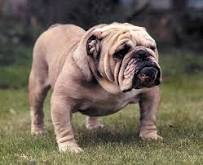

Some Famous Dogs
PITBULL
 Pit bull is a term used in the United States for a type of dog descended from bulldogs and terriers, while in other countries such as the United Kingdom the term is used as an abbreviation of the American Pit Bull Terrier breed.
Pit bull is a term used in the United States for a type of dog descended from bulldogs and terriers, while in other countries such as the United Kingdom the term is used as an abbreviation of the American Pit Bull Terrier breed.
Pit bull-type dogs have a controversial reputation as pets both in the United States and internationally, due to their history in dog fighting, the number of high-profile attacks documented in the media over decades
Price
The prices of pitbull are starting from 100 dollars onwardBULL DOG
 The Bulldog is a British breed of dog of mastiff type. It may also be known as the English Bulldog or British Bulldog. It is of medium size, a muscular, hefty dog with a wrinkled face and a distinctive pushed-in nose.In the United Kingdom, the breed standards are 55 lb (25 kg) for a male and 50 lb (23 kg) for a female.In the United States, a typical mature male weighs 50 lb (23 kg), while mature females weigh about 40 lb (18 kg).The Bulldog Club of America recommends the average weight of a bulldog to be 40–50 lb (18–23 kg)
Price
The prices of pure bull dogs are starts from $2000 onwardGERMAN SHEPHERD
 Generally considered dogkind's finest all-purpose worker, the German Shepherd Dog is a large, agile, muscular dog of noble character and high intelligence. Loyal, confident, courageous, and steady, the German Shepherd is truly a dog lover's delight. German Shepherd Dogs can stand as high as 26 inches at the shoulder and, when viewed in outline, presents a picture of smooth, graceful curves rather than angles. The natural gait is a free-and-easy trot, but they can turn it up a notch or two and reach great speeds. There are many reasons why German Shepherds stand in the front rank of canine royalty, but experts say their defining attribute is character: loyalty, courage, confidence, the ability to learn commands for many tasks, and the willingness to put their life on the line in defense of loved ones. German Shepherds will be gentle family pets and steadfast guardians, but, the breed standard says, there's a 'certain aloofness that does not lend itself to immediate and indiscriminate friendships.
Generally considered dogkind's finest all-purpose worker, the German Shepherd Dog is a large, agile, muscular dog of noble character and high intelligence. Loyal, confident, courageous, and steady, the German Shepherd is truly a dog lover's delight. German Shepherd Dogs can stand as high as 26 inches at the shoulder and, when viewed in outline, presents a picture of smooth, graceful curves rather than angles. The natural gait is a free-and-easy trot, but they can turn it up a notch or two and reach great speeds. There are many reasons why German Shepherds stand in the front rank of canine royalty, but experts say their defining attribute is character: loyalty, courage, confidence, the ability to learn commands for many tasks, and the willingness to put their life on the line in defense of loved ones. German Shepherds will be gentle family pets and steadfast guardians, but, the breed standard says, there's a 'certain aloofness that does not lend itself to immediate and indiscriminate friendships.